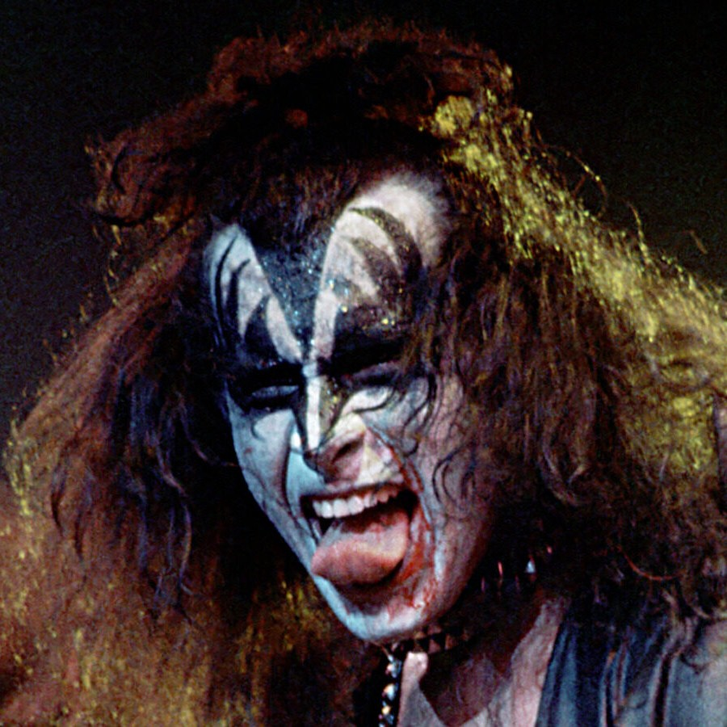

Dark Side of the Spoon
The Rock Cookbook features thirty recipes inspired by some of the most renowned rock acts of today and yesteryear.
The dishes are accompanied by exclusive artworks from thirty top illustrators. Catering for cooks of all abilities and tastes,
this book will help you master a wide range of appetizers, entrées, and desserts—including Smashing Pumpkin Pie, Fleetwood Mac and Cheese, and Primal Bream.
Dark Side of the Spoon celebrates the many humorous parallels between food and rock, and is a must-have for anyone with a love for cooking, music,
or illustration, or indeed all three.

Dark Side of the Spoon is inspired by a shared love for music and food, along with a humorous approach to cooking. Authored by Joseph Inniss, Ralph Miller, and
Peter Stadden, the cookbook features thirty recipes inspired by renowned rock acts, accompanied by imaginative artwork.
The authors aimed to create recipes that not only entertain but also resonate with fellow foodies, encouraging a sense of adventure in cooking.